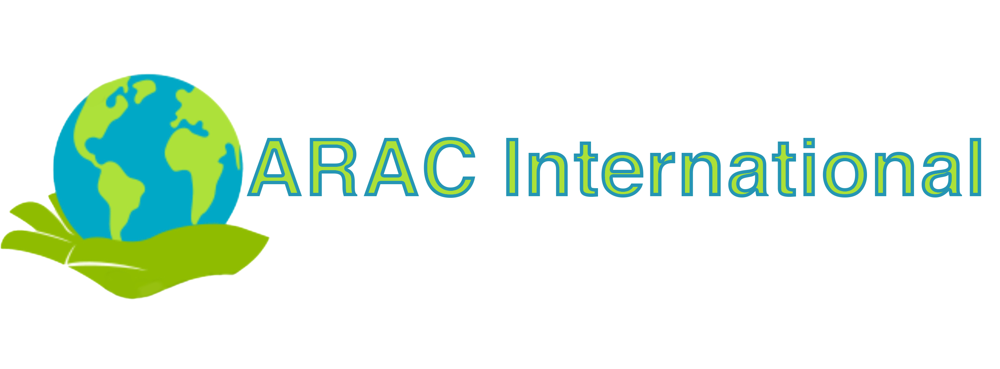

loading…

Strategic Communications Division
Data Journalism & Analytical Communications for Peace and Security
Newsletter & Flashpoints
Data Journalism
Global Security News
Quanta Analytica
Resources
MNS Consulting